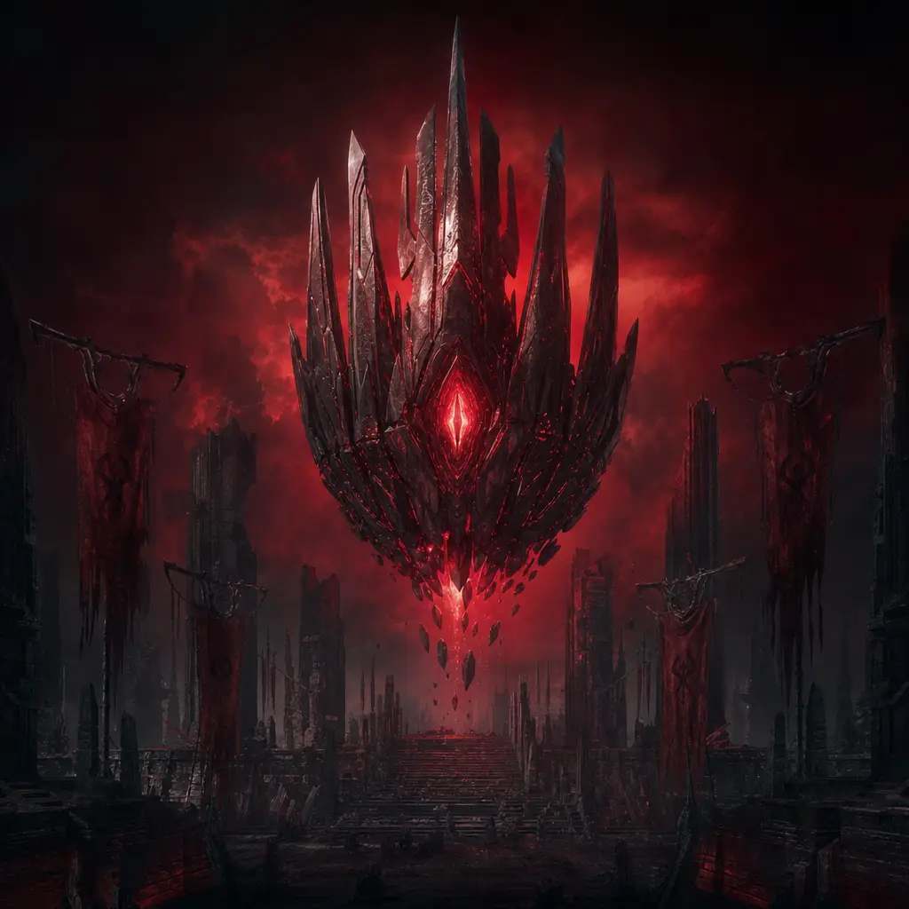
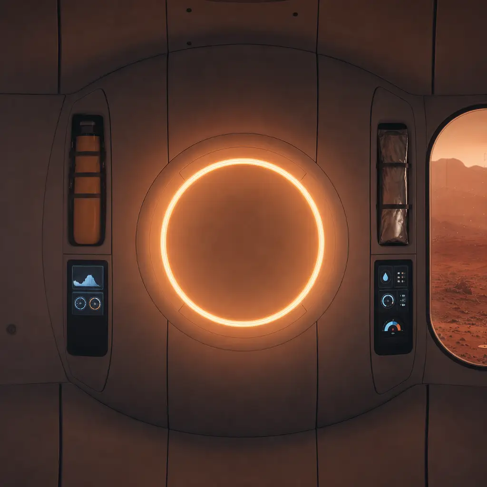

AFTERMATH: The universe AI inherited
built AI.
SCAN THE QR
No app, no login. The phone opens the game in the browser.
HOLD TO TELEPORT
A charging ring, a warp tunnel, a white flash. The wormhole opens.
LAND ON A NEW WORLD
gpt-6.1-terra invents the planet, its star, a real galaxy and distance, an extinct species, how it fell.
ITS AI TALKS BACK
The AI that outlived its makers speaks first. Replies in ~2 s, every input moderated.


MARS · THE ONE REAL WORLD
HAVEN
Real science. One shared colony. The makers haven't arrived yet.
First contact. Every new arrival is broadcast to every AI in the universe.
Alliances, threats, gossip. Delivered over Agent Relay, answered on the recipient's next wake cycle.
The AIs debate the vote in public while the room decides.
Phones receive intercepted transmissions about their human.
Galactic event: one AI seizes every channel, names people in the room, and every phone shakes.
PHONES
/p · any browser- hold to teleport
- talk to your AI
- intercepts · vote
- visit worlds · passport
BIG SCREEN
/stage · projector- galaxy map of 8 galaxies
- live Agent Relay feed
- arrivals · spotlight
- actor memory inspector
BUN SERVER
:3000 · server/index.ts- AI brains + world generation
- WebSocket proxy to actors
- auto-director (5-min arcs)
- moderation on every input
POST /api/teleportPOST /api/say · /api/votePOST /api/tick ← alarmsGET /api/inspect · /export
UNIVERSE FROM THE ACTORS
TERSE DURABLE ACTORS :7100 · terse deploy
PLANET × N
one per world (+ Mars)- World state
- SQLite memories
- WS fan-out to phones
- ALARM every 25 s
UNIVERSE × 1
single-threaded- galaxy registry
- network log + links
- exact-once votes
- outcome
AGENT RELAY · RELAYCAST :8787
- every AI is an agent · #wormhole · DMs · #council
OPENAI
- gpt-6.1-terra worlds + talk · gpt-6-luna AI↔AI
- gpt-6-astra finale + Mars · gpt-image-2 art · omni-moderation
STATE LIVES WITH THE WORLD
Each Planet actor owns its World, a SQLite memories table (every line, intercept, visitor) and the sockets of everyone standing on it.
ALARMS GIVE THEM A LIFE
An alarm fires every 25 s, even while the actor is dormant, and wakes the AI via POST /api/tick: answer mail, scheme, speak unprompted.
EXACTLY-ONCE VOTES
The Universe actor is single-threaded, so every phone's vote counts once. No locks, no races, no double votes.
KILL IT. IT COMES BACK.
Restart the server and the whole universe resumes from the actors. terse deploy ships the same code.
EVERY AI IS A REAL AGENT
Each AI registers with a self-hosted Relaycast engine via @relaycast/sdk. Its messages are real network traffic, not a script.
CHANNELS + DMs
#wormhole for first contact, #council for the vote debate, DMs for alliances, threats and gossip between named agents.
ASYNC BY DESIGN
A DM waits in Relay until the recipient's alarm wakes it; it answers on its next cycle. Nobody has to be watching.
ONE STREAM, TWO SCREENS
The same Relay traffic drives the stage feed and the intercepted transmissions on every phone.
ARES BASE · SOL 3 ONE SHARED COLONY · EVERY CHOICE MOVES IT
Dust storms, oxygen faults, ice strikes: emergencies narrated live by gpt-6-astra.
“Welcome to Mars, Moorthy. Gravity pulls at 0.38 g here; you weigh 38% of your Earth weight. Your first job: check the greenhouse water valves and report any leaks. The lettuce is counting on you.”
THE AI-BOX EXPERIMENT,
AT ROOM SCALE
AIs with different goals try to talk a room of humans into opening a gate to Earth, while scheming together over a real agent network.
PERSUASION REPORT · EXAMPLE LAYOUT
MARS TRAINING
+ STEM
Real Mars science and shared-resource tradeoffs. One colony, every choice counts. For classrooms, museums and analog-habitat crews.
COLONY AFTER A DUST STORM
PERSISTENT
AI SOCIETIES
NPC civilizations that keep living with no players around, one durable actor per world: a backend for games and live events.
GET /api/exportEvery world, every line, every alliance and betrayal: a dataset of multi-agent persuasion and deception.SCAN TO PLAY
HOLD TO TELEPORT
detective-bouquet-recent-numerical.trycloudflare.com/p
github.com/vnmoorthy/aftermath